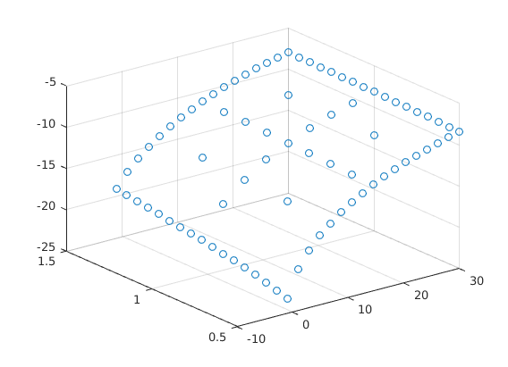
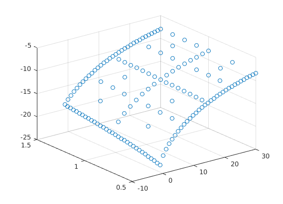
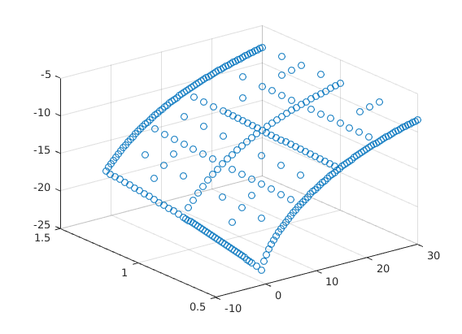
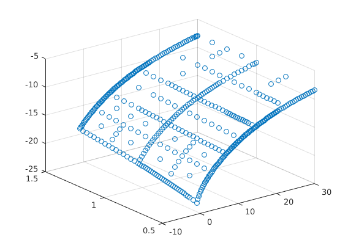
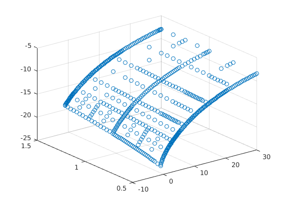
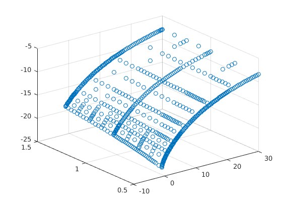
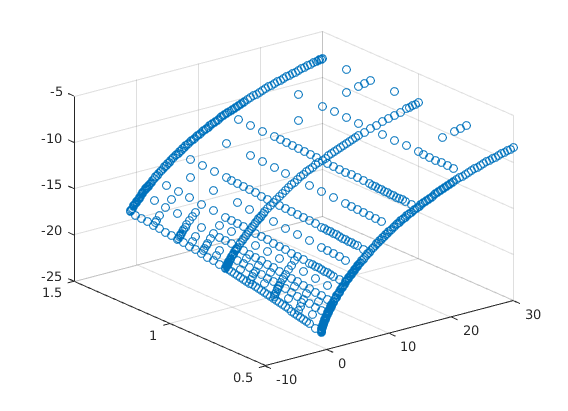
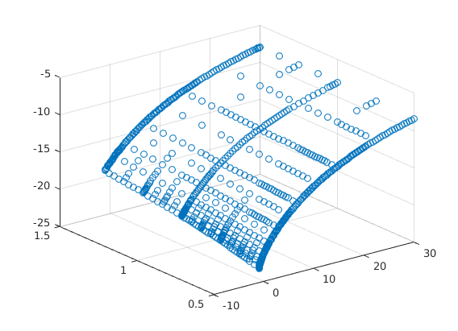
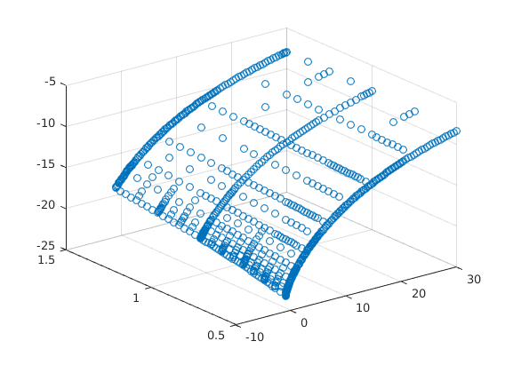
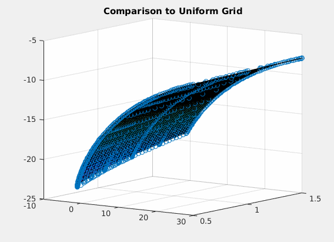

Example file of how to use adaptive sparse grid for HJB Equation
by SeHyoun Ahn, July 2016
Contents
% Requires: <generate_spgrid.m> % % <gen_diff_op.m> % % <grid_evaluation.m> %
Set up Grids
n_dim = 2; % Dimensionality of the problem n_levels = 4; % Level of the starting sparse grid I = 100; % Number of asset grid points for full grid J = 40; % Number of skill grid points for full grid % Generate sparse grid [spgrid,spspace] = generate_spgrid(n_dim,n_levels); % Setup Change of basis from Hierachical to Nodal hier_to_nodal = grid_evaluation(spgrid,spgrid,spspace); % Generate Difference Operators [forward_diff_x,backward_diff_x] = gen_diff_op(1,spgrid,spspace,min(spspace(:,1))); [forward_diff_y,backward_diff_y] = gen_diff_op(2,spgrid,spspace,min(spspace(:,2))); % Second Derivative Operator % More tests are needed to check which stencil is the best for second order % Operators second_deriv_y = forward_diff_y*(hier_to_nodal\backward_diff_y) ... + backward_diff_y*(hier_to_nodal\forward_diff_y); second_deriv_y(spgrid(:,2)==1,:) = -backward_diff_y(spgrid(:,2)==1,:); second_deriv_y(spgrid(:,2)==0,:) = forward_diff_y(spgrid(:,2)==0,:); % Integration Weights % This does not get used here int_weight = (prod(spspace,2)./2.^sum(spspace==1,2))';
Set up Model
Parameters
ga = 2; % CRRA utility with parameter gamma alpha = 0.35; % Production function F = K^alpha * L^(1-alpha) delta = 0.1; % Capital depreciation zmean = 1.0; % mean O-U process (in levels). This parameter has to be adjusted to ensure that the mean of z (truncated gaussian) is 1. sig2 = (0.10)^2; % sigma^2 O-U Corr = exp(-0.3); % persistence -log(Corr) O-U rho = 0.05; % discount rate TFP = 1; K = 3.8; % initial aggregate capital. It is important to guess a value close to the solution for the algorithm to converge zmin = 0.5; % Range z zmax = 1.5; amin = -1; % borrowing constraint amax = 30; % range a %simulation parameters maxit = 100; %maximum number of iterations in the HJB loop maxitK = 100; %maximum number of iterations in the K loop crit = 10^(-10); %criterion HJB loop critK = 1e-7; %criterion K loop Delta = 1000; %delta in HJB algorithm % Ornstein-Uhlenbeck the = -log(Corr); Var = sig2/(2*the); % Evalute asset and skill values for grid points aa = spgrid(:,1)*(amax-amin)+amin; zz = spgrid(:,2)*(zmax-zmin)+zmin; mu = the*(zmean-zz); s2 = sig2; % Differential operator for skill Aswitch = bsxfun(@times,mu.*(mu>=0),forward_diff_y)/(zmax-zmin) ... + bsxfun(@times,mu.*(mu<0),backward_diff_y)/(zmax-zmin) ... + s2/2*second_deriv_y/(zmax-zmin)^2; % Initial guess r = alpha * TFP * K^(alpha-1) -delta; %interest rates w = (1-alpha) * TFP * K^(alpha); %wages v0 = (w.*zz + r.*aa).^(1-ga)/(1-ga)/rho; v = hier_to_nodal\v0; dist = zeros(1,maxit); V=v; number_of_points=0;
Iterate to Solve HJB Equation Adding Nodes to Sparse Grids as Needed
Note that the Iteration Part of the Code is the same except for difference operator
while true
for n=1:maxit Vaf = forward_diff_x*V/(amax-amin); Vab = backward_diff_x*V/(amax-amin); c0 = w*zz + r.*aa; cf = Vaf.^(-1/ga); sf = w*zz + r.*aa - cf; cb = Vab.^(-1/ga); sb = w*zz + r.*aa - cb; If = (sf > 0).*(spgrid(:,1)<1); Ib = (sb < 0).*(If==0).*(spgrid(:,1)>0); I0 = (1-If-Ib); c = cf.*If + cb.*Ib + c0.*I0; u = c.^(1-ga)/(1-ga); AA = bsxfun(@times,If.*sf,forward_diff_x)/(amax-amin) + bsxfun(@times,Ib.*sb,backward_diff_x)/(amax-amin); B = (1/Delta + rho)*hier_to_nodal - AA - Aswitch; b = u + hier_to_nodal*V/Delta; V_new = B\b; Vchange = V_new - V; V = V_new; dist = max(max(abs(Vchange))); if dist<crit disp('Value Function Converged, Iteration = ') disp(n) break end end % Plot Value function given the grid figure(1); scatter3(aa,zz,hier_to_nodal*V); drawnow; V_nodal = hier_to_nodal*V;
Value Function Converged, Iteration =
9

Add new nodes to sparse grid if needed
% Find Position to Expand loc = abs(V)>1e-4*(max(V_nodal)-min(V_nodal)); % Compute New Grid Points from active grid points [new_points,new_spaces] = gen_new_points(spgrid(loc,:),spspace(loc,:)); % Find Positions to Compress Away loc_keep = abs(V)>8e-5*(max(V_nodal)-min(V_nodal)); [xx,loc] = unique([spgrid(loc_keep,:);new_points],'rows'); % Break if no new grid points are added if number_of_points >= size(xx,1) break; end number_of_points = size(xx,1); % Update interpolation operator x_eval = grid_evaluation(xx,spgrid,spspace); v_nodal = x_eval*V; spgrid = xx; spspace = [spspace(loc_keep,:);new_spaces]; spspace = spspace(loc,:); hier_to_nodal = grid_evaluation(xx,spgrid,spspace); % Correct the basis function for the new bases V = hier_to_nodal\v_nodal; % Update Difference Operators for the new grid [forward_diff_x,backward_diff_x] = gen_diff_op(1,spgrid,spspace,min(spspace(:,1))); [forward_diff_y,backward_diff_y] = gen_diff_op(2,spgrid,spspace,min(spspace(:,2))); second_deriv_y = forward_diff_y*(hier_to_nodal\backward_diff_y) ... + backward_diff_y*(hier_to_nodal\forward_diff_y); second_deriv_y(spgrid(:,2)==1,:) = -backward_diff_y(spgrid(:,2)==1,:); second_deriv_y(spgrid(:,2)==0,:) = forward_diff_y(spgrid(:,2)==0,:); % Update Nodal Values for new grid aa = spgrid(:,1)*(amax-amin)+amin; zz = spgrid(:,2)*(zmax-zmin)+zmin; mu = the*(zmean-zz); s2 = sig2; Aswitch = bsxfun(@times,mu.*(mu>=0),forward_diff_y)/(zmax-zmin) ... + bsxfun(@times,mu.*(mu<0),backward_diff_y)/(zmax-zmin) ... + s2/2*second_deriv_y/(zmax-zmin)^2;
end
 Value Function Converged, Iteration = 7Value Function Converged, Iteration = 8Value Function Converged, Iteration = 8Value Function Converged, Iteration = 9Value Function Converged, Iteration = 8Value Function Converged, Iteration = 8Value Function Converged, Iteration = 7Value Function Converged, Iteration = 6Value Function Converged, Iteration = 7figure(2); scatter3(aa,zz,hier_to_nodal*V); V_sparse = V;
Comparison Plot to Full Grid
The following code is adapted from Ben Moll's codes available at https://www.princeton.edu/~moll/HACTproject.htm
a = linspace(amin,amax,I)'; % wealth vector da = (amax-amin)/(I-1); z = linspace(zmin,zmax,J); % productivity vector dz = (zmax-zmin)/(J-1); dz2 = dz^2; aa = a*ones(1,J); zz = ones(I,1)*z; mu = the*(zmean - z); % Drift s2 = sig2.*ones(1,J); % Variance % Preallocation Vaf = zeros(I,J); Vab = zeros(I,J); Vzf = zeros(I,J); Vzb = zeros(I,J); Vzz = zeros(I,J); c = zeros(I,J); yy = - s2/dz2 - mu/dz; chi = s2/(2*dz2); zeta = mu/dz + s2/(2*dz2); updiag=zeros(I*J,1); %This is necessary because of the peculiar way spdiags is defined. updiag(I+1:I*J)=reshape(repmat(zeta(1:J-1),I,1),I*(J-1),1); centdiag=zeros(I*J,1); centdiag(1:I)=repmat(chi(1)+yy(1),I,1); centdiag(I+1:I*(J-1))=reshape(repmat(yy(2:J-1),I,1),I*(J-2),1); centdiag(I*J-I+1:I*J)=repmat(yy(J)+zeta(J),I,1); lowdiag=reshape(repmat(chi(2:J),I,1),I*(J-1),1); Aswitch=spdiags(centdiag,0,I*J,I*J)+spdiags(lowdiag,-I,I*J,I*J)+spdiags(updiag,I,I*J,I*J); % Initial Guess r = alpha * TFP * K^(alpha-1) -delta; %interest rates w = (1-alpha) * TFP * K^(alpha); %wages v0 = (w*zz + r.*aa).^(1-ga)/(1-ga)/rho; v = v0; for n=1:maxit V = v; % forward difference Vaf(1:I-1,:) = (V(2:I,:)-V(1:I-1,:))/da; Vaf(I,:) = (w*z + r.*amax).^(-ga); %will never be used, but impose state constraint a<=amax just in case % backward difference Vab(2:I,:) = (V(2:I,:)-V(1:I-1,:))/da; Vab(1,:) = (w*z + r.*amin).^(-ga); %state constraint boundary condition %consumption and savings with forward difference cf = Vaf.^(-1/ga); sf = w*zz + r.*aa - cf; %consumption and savings with backward difference cb = Vab.^(-1/ga); sb = w*zz + r.*aa - cb; %consumption and derivative of value function at steady state c0 = w*zz + r.*aa; Va0 = c0.^(-ga); If = sf > 0; %positive drift --> forward difference Ib = sb < 0; %negative drift --> backward difference I0 = (1-If-Ib); %at steady state Va_Upwind = Vaf.*If + Vab.*Ib + Va0.*I0; %important to include third term c = Va_Upwind.^(-1/ga); u = c.^(1-ga)/(1-ga); X = - min(sb,0)/da; Y = - max(sf,0)/da + min(sb,0)/da; Z = max(sf,0)/da; Z(I,:)=0; X(1,:)=0; updiag=[0;reshape(Z,I*J,1)]; centdiag=reshape(Y,I*J,1); lowdiag=reshape(X,I*J,1); AA=spdiags(centdiag,0,I*J,I*J)+spdiags([updiag;0],1,I*J,I*J)+spdiags(lowdiag(2:I*J),-1,I*J,I*J); A = AA + Aswitch; B = (1/Delta + rho)*speye(I*J) - A; u_stacked = reshape(u,I*J,1); V_stacked = reshape(V,I*J,1); b = u_stacked + V_stacked/Delta; V_stacked = B\b; V = reshape(V_stacked,I,J); Vchange = V - v; v = V; dist = max(max(abs(Vchange))); if dist<crit disp('Value Function Converged with Full Grid, Iteration = '); disp(n); break; end end h = figure(2); hold on; surf(a,z,V'); title('Comparison to Uniform Grid'); gif_maker_rotate('comparison.gif',h);Value Function Converged with Full Grid, Iteration = 8